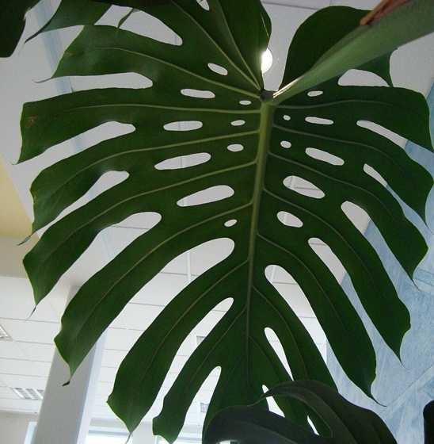

兵庫県加西市北条町
古い家の静けさのなかで、
ひと皿ずつ手づくりの昼ごはんを。
Meglu Cafeは、昔ながらの日本家屋を改装した、細道の奥の小さなカフェです。
お店の由来・想い
中華料理人だったオーナーの、
日々考える手づくりの一皿。
紹介記事によると、Meglu Cafeは昔ながらの日本家屋をリノベーションし、2024年5月1日にオープンしたカフェです。大通りから一本入った細道にあり、「隠れ家」と紹介されています。オーナーは以前、中華料理人として勤めており、その経験を活かして日々メニューを考えています。特にメインに添えるソースにこだわっているそうです。
店内には塗り替えた漆喰の壁や張り替えた床板がある一方、昔のままの和室や趣のある欄間が残されています。床板を使ったカウンターでは、外を眺めながらコーヒーをいただけると紹介されています。今後はお茶やお花など日本文化に触れられるイベントも計画中とのことです。
情報源: きっすぷれす(紹介記事) / 加西市観光協会 / Instagram
店名の意味は確認できていないため、このページでは触れていません。上記の事実以外の言い回しは制作側の表現です。


メニュー
週替わりのランチプレートと、食後のコーヒー。
紹介記事では、週替わりのランチプレート(ご飯・汁物・サラダ・メイン・小鉢・飲茶付き)があり、メインと小鉢は選べると紹介されています。メインと小鉢のテイクアウトも可能とされています。カフェタイムには手づくりデザートも並ぶようです。月に一度のマーケット「Meglu Market」の開催も紹介されています。
ランチプレート
週替わり。内容は準備中
コーヒー・お茶
詳細は準備中
手づくりデザート
詳細は準備中
営業時間・定休日・価格・提供内容の詳細は変更されることがあるため、掲載せず「準備中」としています。最新情報はInstagramをご覧ください。


写真は雰囲気を伝えるフリー素材のイメージで、お店で提供しているものではありません。
口コミ(イメージ例)
こんな声が聞こえてきそうなお店です。
細い道を入った先に古い家があって、少しわくわくしました。ゆっくりお昼をいただけました。
ごはんも小鉢も一品ずつ丁寧で、食後のコーヒーまで落ち着けました。
和室の雰囲気が懐かしくて、また季節が変わったら来たいです。
上の3件は制作側が作成したイメージ例で、実際のお客様の声ではありません。


